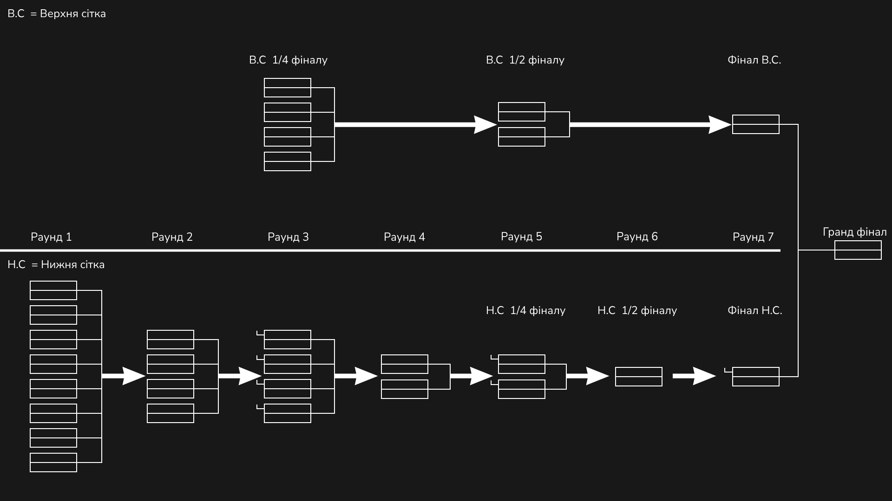

2. Неявка на матч без попередження мінімум за добу - карається технічною поразкою команди у матчі. У випадку якщо гравець попередив організаторів будь-яким доступним способом - відбувається пошук заміни гравця. Умови заміни обговорюються персонально у кожному випадку.
3. Порушення правил спільноти у чаті ліги у діскорді караються дискваліфікацією з змагань та забороною приймати участь у наступному сезоні.
2. Не спамити в чат під час матчу та на трансляціях змагання.
3. Не виходити з матчу до його завершення. Не підставляйте таким чином своїх тімейтів.
Надіюсь усім зрозумілі ці три прості правила і всі будуть гідно себе поводити на змаганнях. Усім удачі і нехай переможе найсильніший.
4. Випадки постійного та довготривалого ігнорування гравцями організаторів карається виключенням з ліги, з подальшою заміною на гравця з резерву, без можливості повернутись.
Абсолютно усі матчі будуть в прямому етері на офіційному
YouTube каналі SLPK (Slow League Pana Karmana). Також на цьому каналі будуть проводитись і інші стрими повʼязані з турніром, тому обовʼязково
підписуйтесь, щоб нічого не пропустити!
У груповому етапі команди поділені в 4 групи по 8 команд. Груповий етап буде тривати 7 турів, тобто
кожна команда зіграє 7 матчів (по одному матчу з кожним противником у групі).
За перемогу в матчі в якому не було додаткового часу (далі Д/Ч) команді буде зараховано 3 бали.
За поразку в матчі в якому не було Д/Ч команда отримає 0 балів.
За перемогу в матчі в якому був Д/Ч команді буде зараховано 2 бали.
За поразку в матчі в якому був Д/Ч команді буде зараховано 1 бал.
І по сумі балів буде формуватись група. Шість команд з групи будуть проходити у плей-офф. Перше та
друге місця підуть у верхню сітку плей-офф, а 3-6 підуть у нижню. 7 та 8 місця покинуть турнір.
Ця турнірна сітка використовує Double Elimination (подвійне вибування), де кожна команда, що вийшла у
верхню сітку має дві можливості продовжити участь у турнірі: одну в верхній сітці (переможців) і одну
в нижній сітці (програвших). Пояснимо докладніше:
Верхня та нижня сітки:
Усі команди стартують в верхній чи ніжній сітці, в залежності від їх місця у групі.
Переможці просуваються до наступних раундів.
Команди з верхньої сітки, які програли, переходять до відповідного раунду нижньої сітки.
Нижня сітка для програвших:
Програвши у верхній сітці, команда потрапляє до нижньої, де отримує другий шанс продовжити
боротьбу.
Якщо команда програє в нижній сітці, вона вибуває з турніру.
Півфінали і фінали:
Відбір триває до того, як визначаться переможці в обох сітках:
Переможець верхньої сітки виходить до гранд-фіналу напряму.
Переможець нижньої сітки спочатку має зіграти у фіналі нижньої сітки, щоб потрапити до
гранд-фіналу.
Гранд-фінал:
У гранд-фіналі зустрічаються переможець верхньої сітки та переможець нижньої.
Раунд 1 - Раунд 4 = Best of 1
1/4 фіналу - 1/2 = Best of 3
Фінал і Гранд Фінал = Best of 5

Усі три призові місця будуть мати свої нагороди, а семе:
1 місце 50% від призового фонду;
2 місце 30% від призового фонду;
3 місце 20% від призового фонду.
Також ви як учасник чи глядач можете приєднатись до збору призового фонду за посиланням
Банки МОНО.
Призовий фонд буде накопичуватись до тих пір, поки не визначаться переможці турніру.
Також можна підтримати огранізаторів для того, щоб покращити контент. (Всі кошти підуть на купівлю
програмного забеспечення для того щоб ліга виглядала ще краще!)
Банка для пітримки організаторів